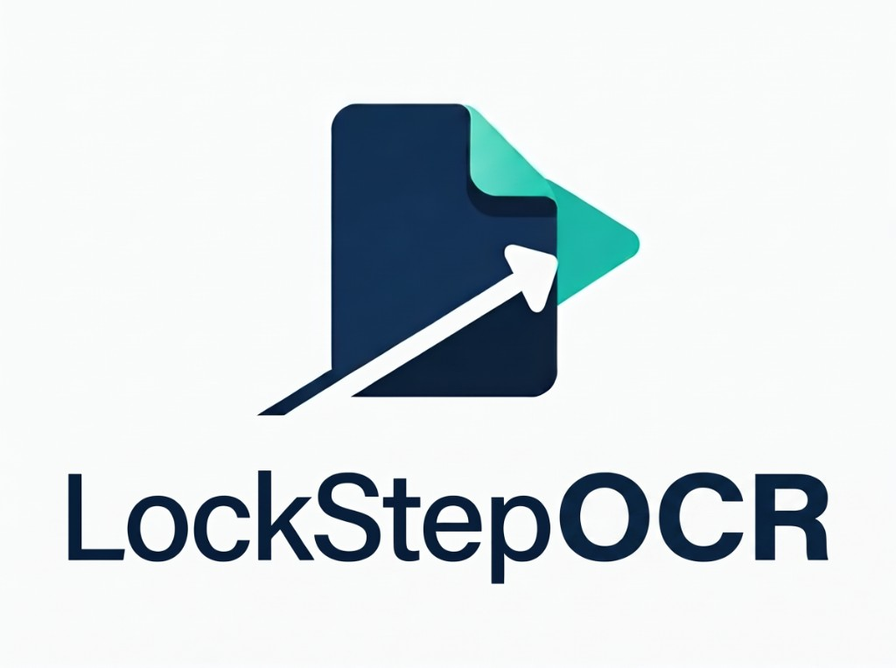

Separate watch folder, output folder, prefix, original name, and suffix. The default prefix is Searchable_OCR_. Output is a searchable PDF. The source file remains in the watch folder. Page size is unchanged.

Night shift
LockStep Tools · version 2.5
Unlimited OCR pipelines. All at once.
Put the scans to bed. We’ll take the night shift. LockStepOCR runs unlimited OCR pipelines at once. Each watches a folder for a scan or a flat PDF and writes a searchable PDF with a text layer at the original page size. The source file stays in the watch folder. Free for the shop, built with the print community.
The pipeline
One master switch. Unlimited pipelines.
Unlimited OCR pipelines, running at the same time. Each has a watch folder, an output folder, a file name, and a post-process action. Output is a searchable PDF at the original page size. The source file is not deleted.
Runs while the other pipelines run. Separate watch folder, output folder, prefix, original name, and suffix, so the rename rule does not collide with pipeline 1.
Another pipeline on the same night. Separate watch folder and output folder. Same output: searchable PDF, original page size, source file left in the watch folder. Pipelines are unlimited. Add another and it runs with the rest.
| Pipelines | Unlimited OCR pipelines, running at the same time. Each has its own watch folder and output folder. |
|---|---|
| Watch folder | Folder the pipeline watches for a scan or a flat PDF. LockStepPDF does not need to be open. |
| Output folder | Where the searchable PDF is written. Originals stay in the watch folder. |
| File name | A prefix, the original name, and a suffix, then .pdf. The default prefix is Searchable_OCR_. |
| Page size | The new file keeps the page size of the art. OCR is a text layer, not a reflow. |
| After processing | Post-process action when the file is written. “Do nothing” leaves the PDF in the output folder. |
LockStepOCR on the desk
Unlimited OCR pipelines. Each has a watch folder, an output folder, a file name, and a post-process action. Start Master OCR Engine runs them together.

Text layer, original page size
The pipeline writes a selectable text layer. Page size stays with the art. The job is not imposed, and the source file stays in the watch folder.
Input
Scan or flat PDF with no text layer: a flattened proof, a form, an archived job. The pipeline writes a searchable PDF at the original page size for prepress or archive.
Download LockStepOCR 2.5
Free Windows installer. Unlimited OCR pipelines. No account, no module fee. Find a bug, we fix it together. Fixes ship when they are ready.